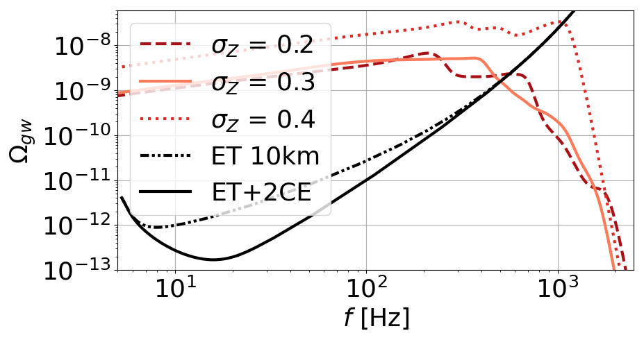

PRINCESS: Predicting Gravitational-Wave Observations
📄 Related Publications
PRINCESS: Prediction of compact binaries observations with gravitational wavesOverview of the PRINCESS Code
PRINCESS (Prediction of Compact Binaries Observations with Gravitational Waves) is an open-source Python tool that forecasts both individual gravitational-wave events and the stochastic background from unresolved sources.
- Developed for use with second- and third-generation detectors (LIGO, Virgo, KAGRA, Einstein Telescope, Cosmic Explorer)
- Easy to install and use: includes ready-to-run templates and example configurations
- Designed to be user-friendly and modular, suitable for researchers and students
- Fully documented using Sphinx, with tutorials and examples available on GitHub
Gravitational Wave Detection Theory
Gravitational-wave detections rely on computing the signal-to-noise ratio (SNR) of each event:
\[\rho^2 = 4 \int_{f_{\min}}^{f_{\max}} \frac{|\tilde{h}(f)|^2}{S_n(f)} df\]Here, \(\tilde{h}(f)\) is the Fourier-domain waveform, and \(S_n(f)\) is the detector noise power spectral density. The SNR depends strongly on:
- the binary masses
- distance/redshift
- source orientation
- detector sensitivity
PRINCESS computes SNRs for each source in a catalog, based on waveform modeling, detector geometry, and sky-averaged antenna patterns.
Detection Biases and Event Predictions
Detection requires a threshold (e.g., \(\rho > 8\)). PRINCESS takes into account the selection bias introduced by this threshold and forecasts the number of resolvable events per detector configuration.
See figure below:

The tool reproduces trends observed in real data. Overestimates are often due to optimistic merger rates or mass distributions in the input population models.
Merger Rates and Observational Comparisons
The tested models span a wide range of local merger rates \(R_0\) from 18 to 100 Gpc\(^{-3}\)yr\(^{-1}\), compared to the observed LVK value of \(R_0 = 23.9^{+14.9}_{-8.6}\).
Key findings:
- Models with lower metallicity spread (σZ = 0.2) align better with current observations.
- Mass distributions with an excess of high-mass black holes inflate SNR values and detection counts.
Stochastic Gravitational-Wave Background
In addition to individual detections, unresolved sources generate a stochastic background. Its amplitude is quantified through the energy density spectrum:
\[\Omega_{\mathrm{GW}}(f) = \frac{f}{\rho_c c} F(f)\]with \(F(f)\) the total GW flux and \(\rho_c\) the Universe’s critical energy density. In PRINCESS, the spectrum is computed as:
\[\Omega_{\mathrm{GW}}(f) \propto f^2 \langle |\tilde{h}(f)|^2 \rangle\]Both total and residual (after subtracting detected sources) spectra are calculated.
Spectral Shape and Detectability

The typical \(f^{2/3}\) slope below ~200 Hz arises from the inspiral phase. High-frequency cutoffs reflect the end of the merger process. Spectral variations stem from different redshift and mass distributions.
PRINCESS also computes the background’s detectability (SNR), including cross-correlation across detectors.
| Network | SNR (total) | SNR (residual) |
|---|---|---|
| ET | 1700 | 59 |
| 2×CE | 3601 | 8 |
| ET + 2×CE | 4332 | <1 |
This shows that the residual background becomes undetectable when using a full 3G detector network, after subtracting individually resolved sources.
Conclusion
PRINCESS bridges theoretical population models and observational forecasts. It enables:
- Predicting the number and properties of detectable gravitational-wave events
- Modeling and assessing the astrophysical stochastic background
- Accounting for observational biases (mass, redshift, orientation)
- Testing detector configurations and network sensitivity
PRINCESS is a key tool for preparing the next era of gravitational-wave astronomy and for constraining the astrophysical origin of compact binaries.